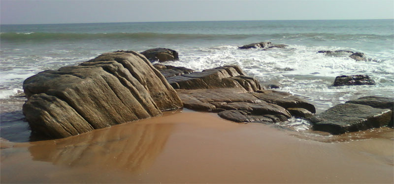
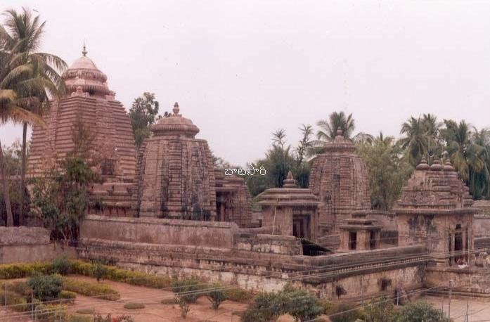
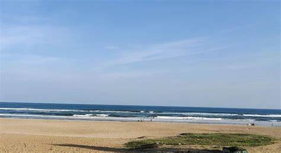
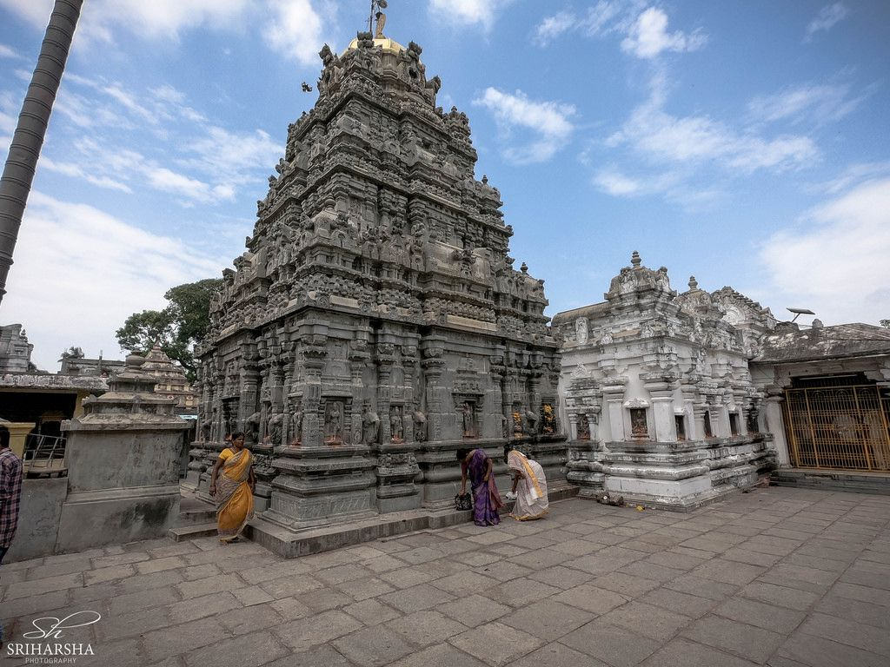

Description: "An ancient temple dedicated to the Sun God, believed to be constructed by Lord Devendra. The temple's architecture allows sun rays to touch the deity's feet twice a year, in February and June".
serene coastal village known for its scenic beach where the Vamsadhara River merges into the Bay of Bengal. It also features a historic lighthouse and a Buddhist stupa.Â
A historic temple complex dedicated to Lord Shiva, renowned for its intricate carvings and Kalinga architectural style. It serves as a significant pilgrimage site in the region.
A tranquil beach where the Mahendra Tanaya River meets the sea. The area is known for its coconut groves, coir industry, and the Janardhana Swamy and Kotilingeswara Swamy temples.
A unique temple dedicated to Lord Vishnu in his Kurma (tortoise) avatar. The temple showcases exquisite architectural styles and houses inscriptions from the 11th to 19th centuries.